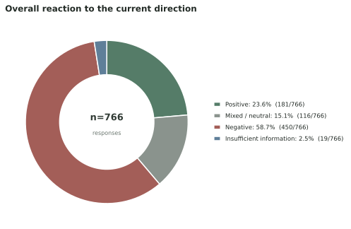
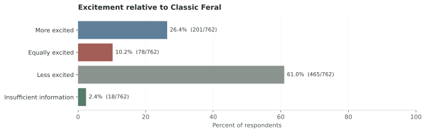
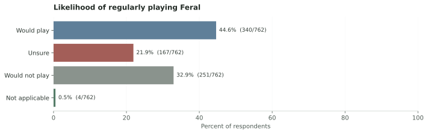
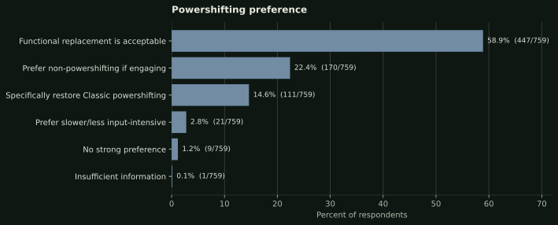
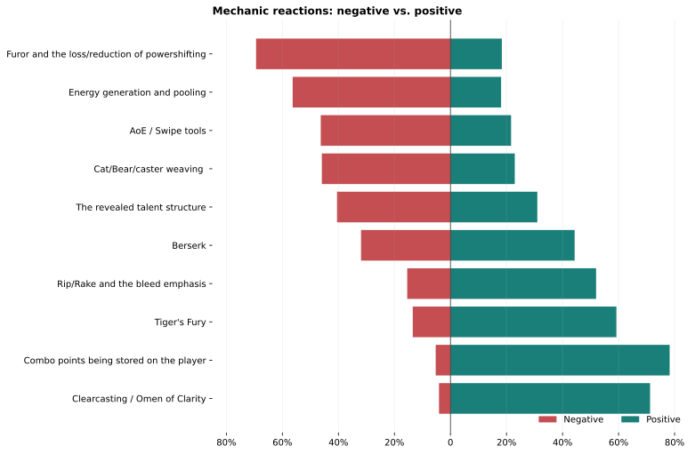
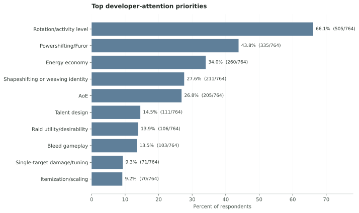

The reveal is landing poorly.
A majority feels negative about the current direction, and 61.1% feel less excited than they do about Classic Feral.
COMMUNITY FEEDBACK · 759 RESPONSES
The community is divided over literal powershifting. It is far less divided over what feels missing: activity, resource decisions, mastery, and the sense that a Druid should use more than one form.
WHY THIS SURVEY EXISTS
Discussion moved quickly across the Druid Classic Discord channels #forever-general, #forever-feral-dps, and #forever-feral-tank during September 12–20, 2026. Several different arguments were being compressed into one: powershifting, energy downtime, bleed gameplay, hybrid identity, AoE, and raid value.
The three archived channel exports are background for why this project was started. The survey was also shared through a public r/classicwow post that invited positive, negative, mixed, and uncertain views rather than treating the loudest discussion as consensus. These contextual materials were not coded, counted, quoted, or included in the analysis. The survey responses are the evidence used below.
THE SHORT VERSION
A majority feels negative about the current direction, and 61.1% feel less excited than they do about Classic Feral.
They would accept a different mechanic if it delivers comparable activity and meaningful resource decisions. Another 22.4% actively prefer an engaging non-powershifting design.
Openness to a new solution should not be mistaken for approval of the revealed Furor and energy model.
The clearest reading is not “everyone wants Classic powershifting back.” It is: if powershifting goes away, the replacement still has to make Feral active, thoughtful, expressive, and recognizably Druid.
HOW THE REVEAL LANDED
Interest in playing Feral is more resilient than excitement about the design. That gives developers room to win people back—but not a reason to dismiss the criticism.



THE POWERSHIFTING QUESTION
Only 14.6% chose literal Classic-style restoration as their closest view. Most respondents leave room for another answer—but they expect that answer to keep the rotation moving and reward good decisions.

WHAT TO KEEP
The criticism is not a rejection of everything new. Several individual ideas are well received and give the design a foundation to build on.

WHAT NEEDS WORK
Rotation and activity dominate the requested attention. Energy and powershifting are closely related, but AoE, hybrid play, talents, and raid value should not be reduced to the same argument.

Test powershifting, faster or resettable Tiger’s Fury, richer Clearcasting interactions, bleed-driven resource gains, and other resource-conversion ideas against the same goal: less empty time with meaningful choices.
Cat/Bear/caster weaving and hybrid off-tanking matter independently of literal powershifting. Form changes should create decisions rather than punish the player.
Player-stored combo points, Clearcasting, Tiger’s Fury, and bleed identity are strong starting points. The bleed direction needs interaction and payoff, not only passive maintenance.
Swipe scaling, dungeon usefulness, raid desirability, tanking, and numerical tuning are not automatically solved by changing the Cat rotation.
IN THEIR OWN WORDS
These excerpts were manually reviewed, stripped of accidental identifiers, and come only from respondents who allowed anonymous quotation.
“Given Feral druids previously high APM gameplay, design should be pushed in that direction. Preferably, however, not through powershifting. Powershifting is a clunky, outdated mechanic that invalidates energy, making the class clunky to play and harder to balance. I write this as someone who has powershifted in every expansion it is available, and will do so in Forever if it is the best dps rotation. However, I think other alternatives (tiger's fury resets, clearcasting, etc. would be much better).”
“Cat Form DPS needs a stronger identity. I’m open to whatever the rotation ultimately looks like, as long as it has verisimilitude... its mechanics should feel like an expression of being a Cat, rather than a collection of DPS mechanics that could belong to any class... Even downtime (energy pooling) for burst windows can contribute to that fantasy if it feels like waiting to strike their prey. That said, the feral charge talent for cats is a great movement towards this. Feels like folks are upset because something was taken away and little was given in its place. Even if the thing that (powershifting) was taken away was degenerated gameplay.”
“The current feral design has far too much downtime. What is fun about playing feral in classic is always having buttons to press. Using your mana resource to gain energy via shifting meant that you always had something to do and decisions to make moment to moment that impact your dps and your value to a group. Standing still and auto attacking a boss because you dont have the energy resources to use your abilities is antithetical to the feral class dps experience.”
“Getting rid of powershifting was a very good idea. However, the talents Furor and and Natural Shapeshifter should not exist. Cats should regenerate energy while not in form and the rage when shifting into bear should be baseline. The druid class is about shapeshifting and without those baseline changes shapeshifting feels bad and actively punishes cat for doing anything outside of cat. Making bleeds stronger is great but Forever has classic design cues, such as bleed immune enemies. Cats and bears being reliant on bleed to do damage and increase threat is going to feel very bad in some situations.”
WHO ANSWERED
This report covers 759 valid responses. 405 respondents played the test build, while 326 closely reviewed or discussed it. The sample leans heavily toward organized raiders and experienced Feral players.
That makes it useful for understanding this engaged community’s priorities. It does not make it representative of every potential Forever player.
BOTTOM LINE
The community has given the design team room to move beyond Classic powershifting. What it has not given up is the expectation that Feral should stay busy, reward mastery, make resources matter, and feel like a shapeshifter rather than a slower Rogue.